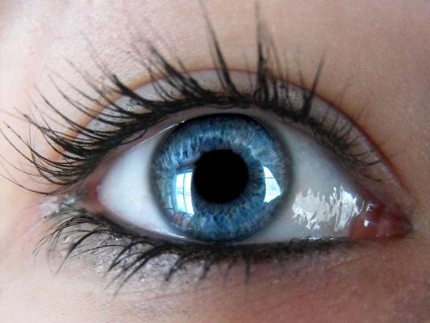

دروس الرسم
دروس خطوة بخطوة للمبتدئين، اختر درسًا وابدأ الرسم
1
ارسم زهرة بسيطة
- ارسم دائرة صغيرة في الوسط.
- أضف بتلات حول الدائرة.
- ارسم ساقًا وورقتين.
- أضف التفاصيل ثم لوّن الزهرة.

2
ارسم عينًا مبسطة
- ارسم شكل العين (شكل لوزة أو حبة لوز).
- أضف دائرة القزحية في الداخل.
- ارسم البؤبؤ (دائرة صغيرة مظلمة).
- أضف الرموش العلوية والسفلية.

3
ارسم منظرًا طبيعيًا
- ابدأ بخط أفق يفصل السماء عن الأرض.
- أضف الجبال أو الأشجار في الخلفية.
- ارسم الشمس في السماء.
- أضف الألوان والتفاصيل النهائية.

🌟 لا تقلق إذا لم تكن الرسمة مثالية؛ التدريب يجعلها أفضل.